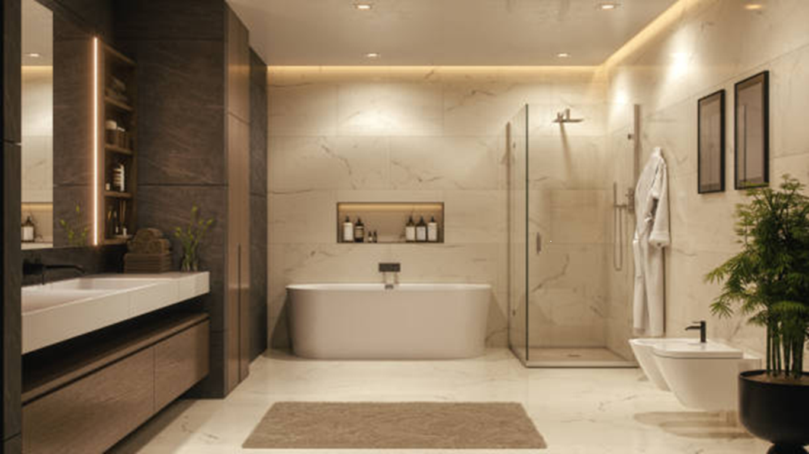

Transform Your Bathroom Into a Space of Luxury & Comfort.
At Bliss Renov, we believe the bathroom is more than a functional space — it is a personal sanctuary where comfort, style, and practicality meet. Founded in 2025, our mission is to bring affordable luxury bathroom renovations to homeowners, landlords, and property investors across South Africa. From elegant tile replacements and sleek shower fittings to complete custom makeovers, our skilled team of designers, tilers, plumbers, and installers work closely with clients to transform outdated bathrooms into modern, functional, and stylish spaces that reflect individual taste. With a focus on high-quality craftsmanship, durable materials, transparent pricing, and a customer-first approach, we ensure every project is seamless, stress-free, and designed to stand the test of time. Whether you’re upgrading for comfort, rental value, or resale appeal, Bliss Renov is your trusted partner in creating bathrooms that inspire comfort and elevate your home.
Why Choose Us:
- Affordable luxury bathroom renovations
- Reliable service with certified professionals
- 100% satisfaction guarantee
Customer Testimonial

“Bliss Renov completely transformed my outdated bathroom into a spa-like retreat. The team was professional, efficient, and exceeded my expectations!” – Sarah K.